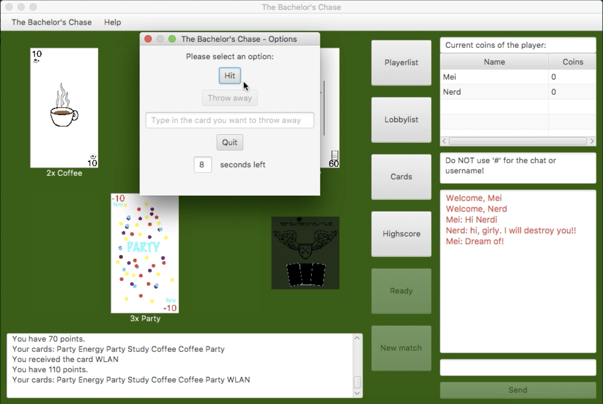

The Bachelor's Chase
The Bachelor's Chase ist ein innovatives, kompetentes und zuverlaessiges Kartenspiel auf der Basis von Blackjack.
Trailer
Gameplay
Entwickler:
- Anna Diack
- Meipei Nghiem
- Adrian Prokopczyk
- Johannes Nussbaum
Steuerung:
Tastatur: Name/Lobby/Chat eintippenEnter-Taste um folgende Knoepfe zu betatigen:
- Beim Login 'OK'
- Beim Namensaenderung 'Enter'
- Beim Lobby waehlen 'Create/Join a new lobby'
- Beim Chatten 'Send'
Zaehlsystem:
Points: Punkte, die durch Karten erzielt werden. Diese werden nach jedem Match wieder auf Null gesetzt.Coins: Werden nach jedem Match berechnet. Diese kann man dazu verwenden um Karten wegzuschmeissen und um den Gewinner zu bestimmen.